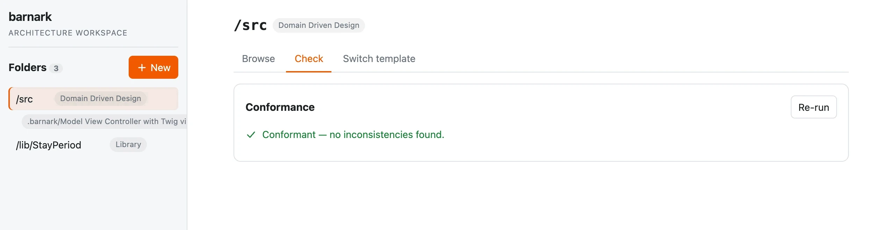

Keep your codebase in the shape you chose.
Every team agrees an architecture. Few can tell when the code stops following it. Barnark gives your code a shape it can be checked against, grows it in the right places, and lets you change style later without starting again. In a barn it is the Architecture tab, and it works on its own in any project too.

Any architecture. Yours included.
Barnark has no style of its own. Pick from a catalogue of well-known shapes, or describe your own, and give each part of your project the one that suits it. An application’s core, its website and a shared library can each follow a different template in one workspace. Every template says what it suits, and the GUI shows its shape before you pick it.
Domain Driven Design
Bounded contexts around a shared kernel.
Feature Based
Each feature in one self-contained folder.
Model View Controller
The classic three-way split.
Library
A small public surface over hidden internals.
Your own
Describe a shape once, and Barnark checks and grows it exactly like the built-in ones.
Drift shows up the day it happens.
Nobody has to declare a codebase “well architected”. One click, or one step in CI, checks the whole codebase against its template. Either it comes back clean, or it names exactly what doesn’t belong and where.
It’s the same idea as a proven story in Barnspec, applied to structure: the evidence decides, not opinion.

New parts land in the right place.
The template knows what belongs where. Wherever something may be added, Barnark offers a button for it. Name it, and the whole structure it needs is created for you, so the right way is also the easy way.
New files arrive as real code, in the right place, ready to fill in.
Create New Context → Billing
Context/
Billing/ ← new
Application/
Domain/
Infrastructure/
PublicApi/Change style without a rewrite.
Architectures should be allowed to change as you learn. Barnark moves your real code from one template to another, asking you about each move and saving the plan as you go.
Confirm a suggestion, rename, choose another home or leave it where it is. Stop whenever you like and carry on later. Nothing moves until the plan is complete, and then it checks the result against the new template.
Domain Driven Design → Library · plan
- Context/FrontDesk→ Internal/Feature/FrontDesk
- Context/Property→ Internal/Feature/Property
- Context/Reservation→ Internal/Feature/Reservation
- Kernel/Infrastructure/Persistencedecide later
- Transport/Http/Json/V1/Guestdecide later
A hotel-booking codebase part way through its plan. Two paths are still to decide, so nothing has been written.
How it works underneath.
Everything above, in more detail, for when you want it.
The template catalogueThe five bundled shapes, folder by folder
| Template | Top-level shape | Suits |
|---|---|---|
| Domain Driven Design | Context/ (one per bounded context), Kernel/, Transport/ | A long-lived application with rich business rules and several distinct parts of the business |
| Feature Based Architecture | One folder per feature, each with Controller/ Entity/ Exception/ Repository/ Value/ | A small or medium application whose features change independently |
| Model View Controller | Controller, model and view folders, named by you | A conventional web application, especially one built on an MVC framework |
| Library | Api/ (contracts, exceptions, factories, values) over Internal/ | A reusable package whose users should depend only on a stable surface |
| Package App | An application behind an Api/, with contexts, features and a kernel inside | An application that other code installs and drives as a dependency |
Templates are Barncept concept graphs, so your own are written the same way, with a description of what they are and what they suit.
Checking a real projectRoles, exclusions and nested folders
A template describes a shape, not your code: “Context” is a role your own folders play. Barnark works out which role each folder plays from the template and records it, so your real contexts are checked where they actually are. Anything it can’t settle is listed, which is usually your to-do list for extending the template.
Paths with no architectural meaning, like test fixtures, can be excluded. A tracked folder inside another follows its own template.
What gets createdReal declarations, interfaces, exceptions and other file types
A folder concept arrives with its whole fixed structure. A file concept arrives as a real PHP declaration in the namespace your autoloader expects. The template decides whether it’s an interface, an exception or a class, or another file type entirely, such as a Twig view. Nothing already on disk is overwritten.
Switching templatesA plan, one decision at a time
A switch asks what to do with each real piece of a folder: move it under a concept of the new template (keeping its name or giving it a new one), leave it where it is, or decide later. A mapping table only suggests; you confirm. The plan is saved after every answer in .barnark/switch-plans/ (in a barn, .barn/barnark/switch-plans/), so you can stop and carry on. When nothing is left to decide it runs in one go: units move with their namespaces rewritten, empty old folders go if you asked, the folder's roles are recorded, and a check against the new template lists what is left to tidy inside the moved folders. Plan it in the terminal or in the GUI's switch tab: they share the plan, so you can start in one and finish in the other.
The command lineFor CI, scripts and terminal lovers
$ barnark template:check # check every tracked folder
$ barnark template:offers src/Context # what may be created here?
$ barnark template:new Context Billing src/Context
$ barnark template:switch Library src # plan a switch, one question at a timeTracked folders live in barnark-workspace.json (in a barn, .barn/barnark-workspace.json), committed with your code, so a check needs no arguments.
Open your codebase in the workspace.
Barnark needs PHP 8.5 and Composer. Install it, then run one command from anywhere in your project.
$ barnark guiInstallationInstall from Packagist
Require Barnark, its command line and its browser app. Composer pulls in Barncept and Barnscaff.
$ composer require --dev rmb32/barnark rmb32/barnark-cli rmb32/barnark-gui